CRM Platform · Compass AI in process · research synthesis
Designing a unified CRM that lifted usage 20%
Three separate initiatives, shipped independently over about two years, each aimed at the same underlying problem: agents had no reliable way to see where a relationship stood or what to do next. A relationship status framework, a redesigned filtering system, and a rebuilt contact detail page went out one at a time, each building on what the last one revealed, and together lifted CRM usage 20% year-over-year.
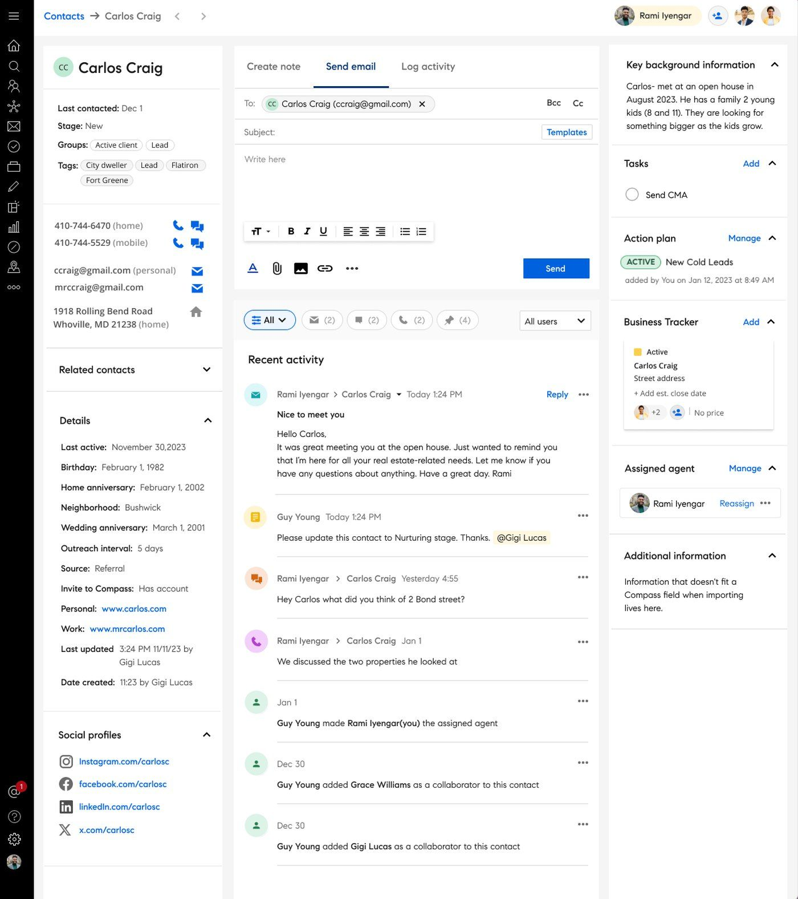
The rebuilt contact detail page, one of three interventions that shipped over two years.
The problem
Compass provides an integrated platform supporting real estate agents in managing clients, transactions, and business growth. The CRM sits at the center of agents' daily workflows. The problem is that contact information, follow-ups, and deal stages were fragmented across tools, leading to missed follow-ups, manual tracking, and lost revenue.
Discovery: understanding workflow breakdowns
To understand adoption friction and workflow breakdowns, I synthesized insights across usability testing, agent interviews across the three initiatives, support feedback, and heuristic audits. I used Dovetail's AI-assisted synthesis to tag and cluster findings, which helped surface patterns faster and reduce bias in theme identification.
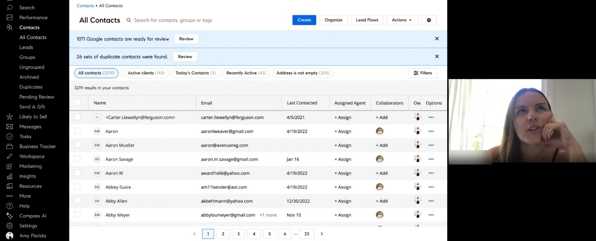
A usability session surfacing just how unstructured the contact pipeline was before relationship statuses existed.
Follow Up Boss, a competing standalone CRM, came up unprompted in nearly every agent conversation, agents torn between not wanting to pay for two tools and not being ready to give it up either, with many saying outright they wished they could just do everything inside Compass. But the research wasn't scoped to one competitor: audits of other CRMs and adjacent products helped surface patterns Follow Up Boss shared with the category, not just where it beat Compass specifically. The goal was never just feature parity: understand what worked well elsewhere, close the gap, then go further wherever the category as a whole fell short. Each initiative, shipped months apart, moved through its own research arc, some as many as three rounds: an interview walking agents through their current tools, concept testing, then a final usability round. Across all three, that same competitive pressure set the bar, the question was never just whether something worked, but whether it held up against what agents could get elsewhere.
Key insight: agents needed clearer visibility into relationship status and next actions without disrupting existing habits. That reframed the goal from feature parity to closing the gap with the tools agents already trusted, then going beyond them.
Agents are frustrated by the fragmented contact detail page
Many were confused and felt the information was redundant and confusing.
Agents want a way to track contacts at a glance
Make progress and next actions obvious.
Saved filters aren't being utilized
Many users didn't know they existed at all.
Solution: three interconnected interventions
These findings pointed to one underlying problem with three different edges to it: a relationship status framework, a redesigned filtering system, and a rebuilt contact detail page, each one informed by what agents did with the last.
Intervention 1
Structured relationship statuses
Contact statuses didn't exist in the Compass CRM before this work. I defined the framework from scratch, giving agents a clear way to see relationship progress and next actions at a glance, which helped reduce dropped follow-ups and brought structure to what had been entirely memory-dependent workflows.
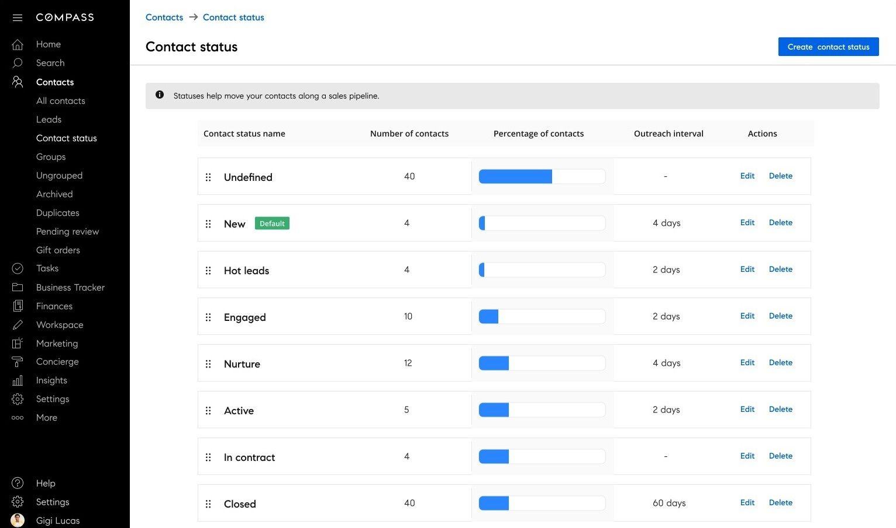
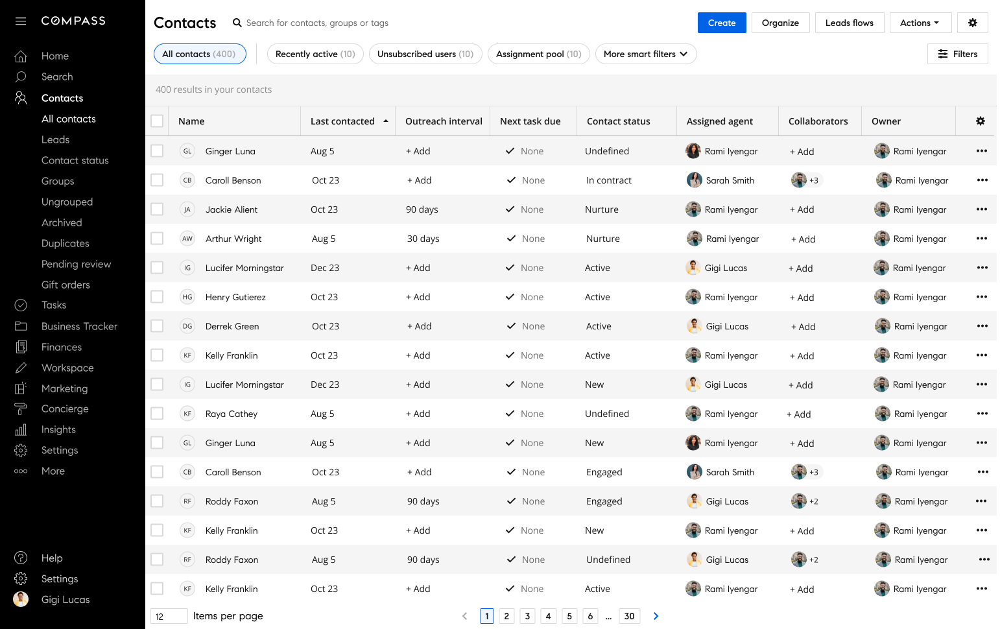
The full set of statuses agents move contacts through (left), and how status shows up in the contacts table they work from every day (right).
Designing contact status for agents on the go
On iOS, status use cases look a bit different because they're centered on agents who work on the move. Since there isn't an option to create a status, the focus shifts to the actions they need most, like quickly updating a contact's status in the moment.
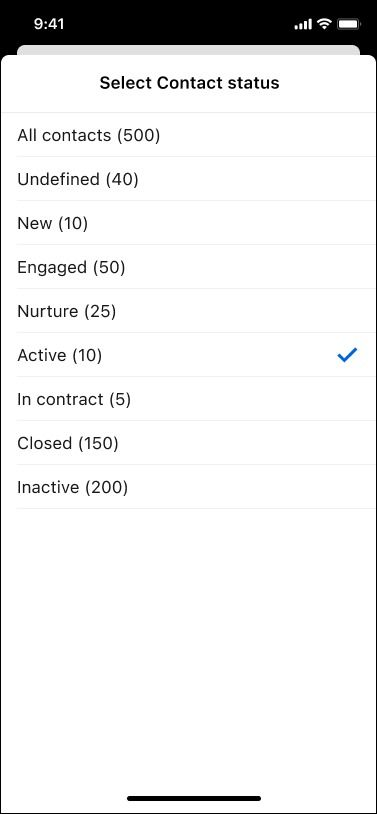
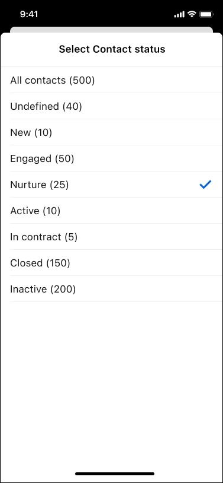
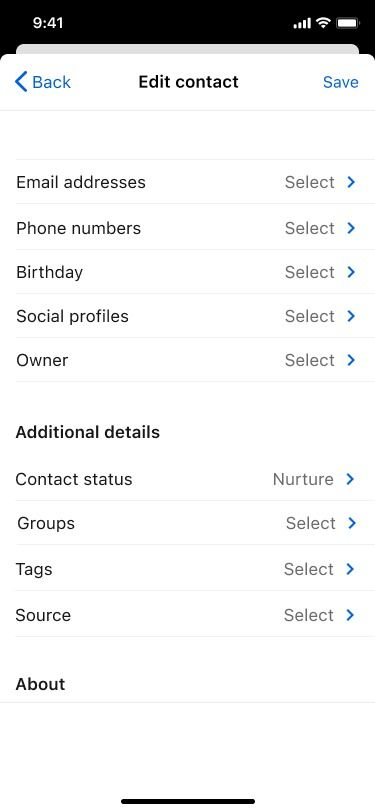
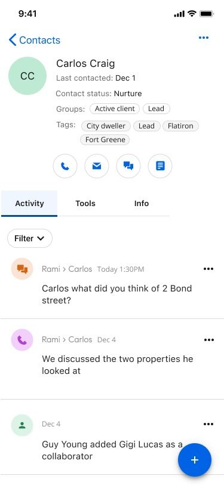
Updating a status in the moment: open the contact, jump to status, pick the new one, save, done.
Intervention 2
Enhanced saved filtering
Saved filtering barely existed before this work, filters were buried and couldn't be combined. I introduced persistent saved filters with boolean condition logic, letting agents combine multiple conditions into actionable contact groups aligned with daily workflows, helping them quickly prioritize outreach.
This also raised a permissions question: admins and team leads sometimes wanted control over certain saved filters, so a whole team stayed consistent instead of everyone building their own from scratch. Balancing that, individual agents still being able to create filters that fit how they personally work, against a way for leadership to set and enforce shared standards, shaped how filters could be created, shared, and locked down.
Before
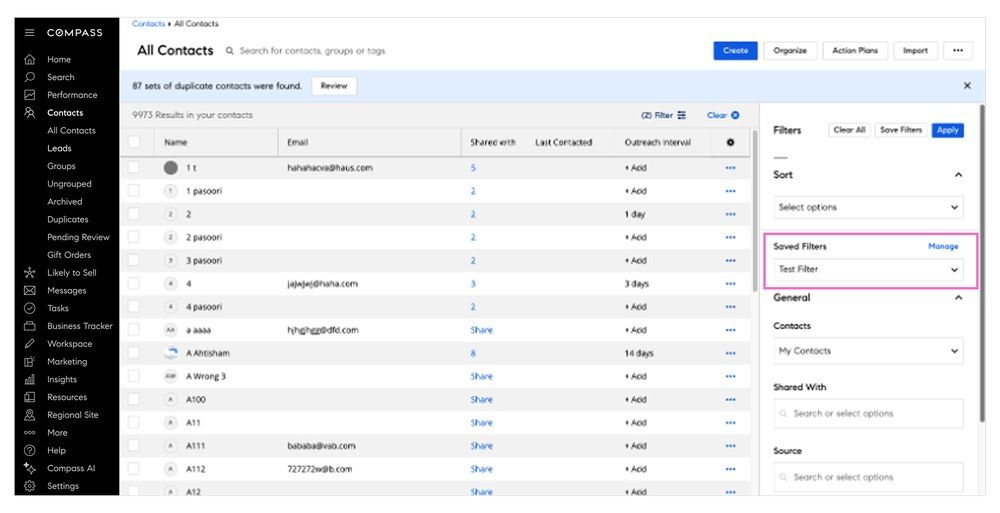
After
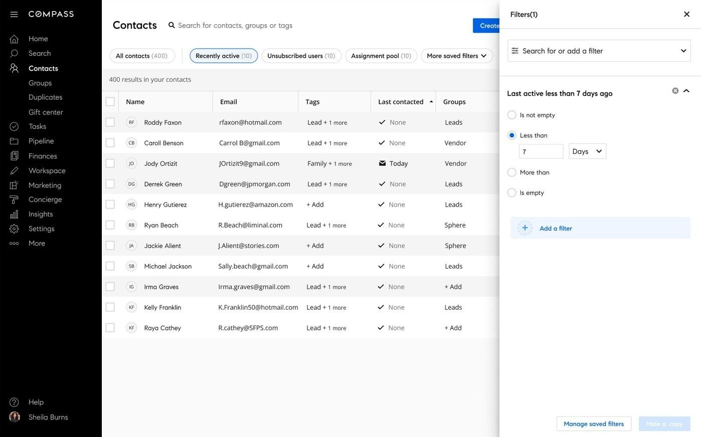
From buried and uncombinable to persistent, boolean, and built into the header.
Intervention 3
Reframing the contact detail page
The original ask was to add an activity feed to the contact detail page. After auditing the existing experience and mapping agent workflows, I pushed back. The feed alone wouldn't solve the visibility problem, the entire contact detail page needed a rethink. I proposed a full revamp, which became the foundation the other two interventions could build on.
Before
Fragmented contact detail page. Information scattered, no clear next action, agents relying on memory and external tools.
After
Unified workflow hub: history, activity, and next steps consolidated into a single source of truth.
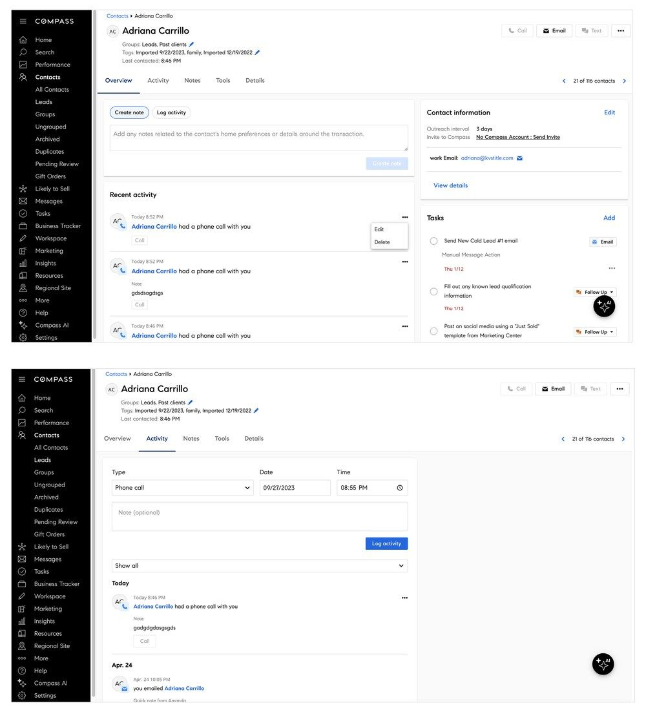
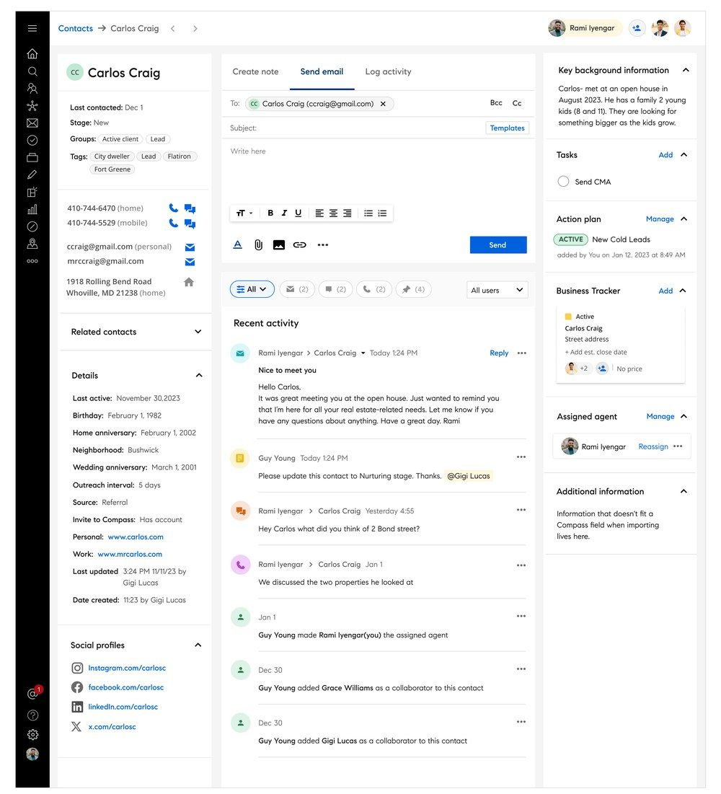
The rebuilt contact detail page, the foundation the other two interventions build on.
Activity feed: types and interactions
Defining the full taxonomy of activity types and their in-context behavior before building, ensuring every interaction state was accounted for and consistent across the feed. Agents were logging calls, texts, meetings, notes, contact changes, collection activity, listing views, and more, each with its own behavior and context.
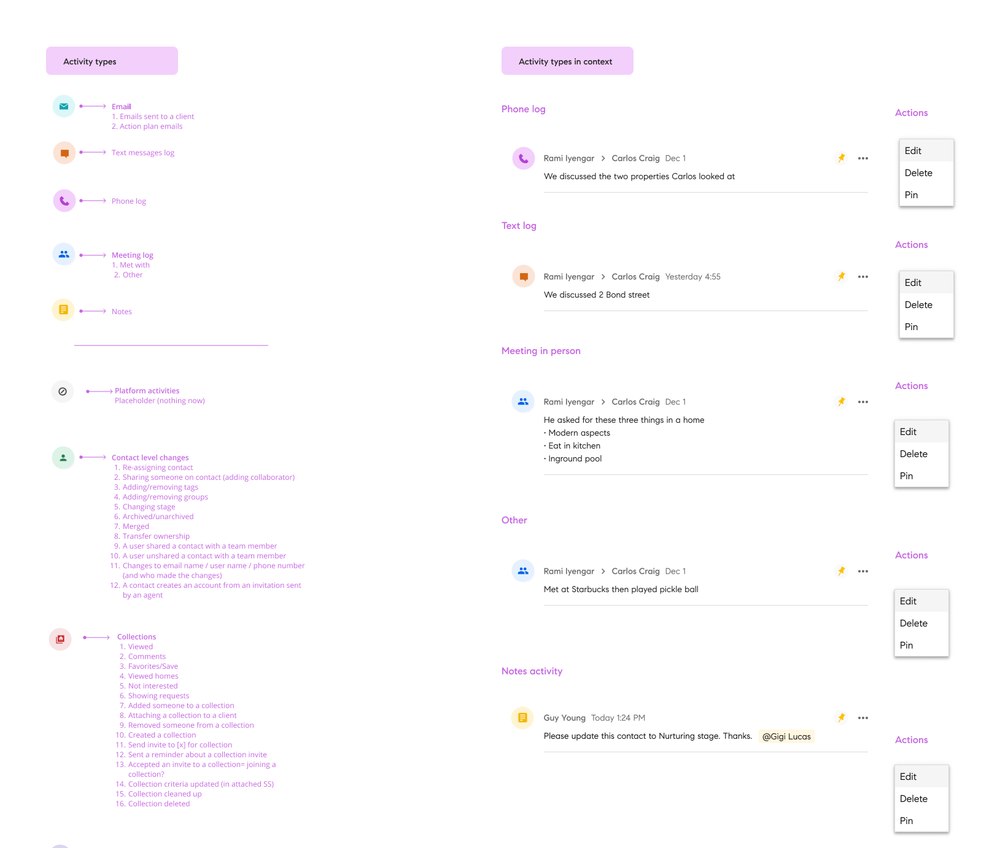
The activity type legend paired with real examples in context. View full size
Designing activity iOS for agents on the move
Mobile had to work differently. Most agents needed access while they were out in the field, not at a desk. I focused on getting them into their work fast, with a simple path to the activity feed that jumps straight into a contact's timeline. From there, they can take notes, call, or text immediately, with as little friction as possible.
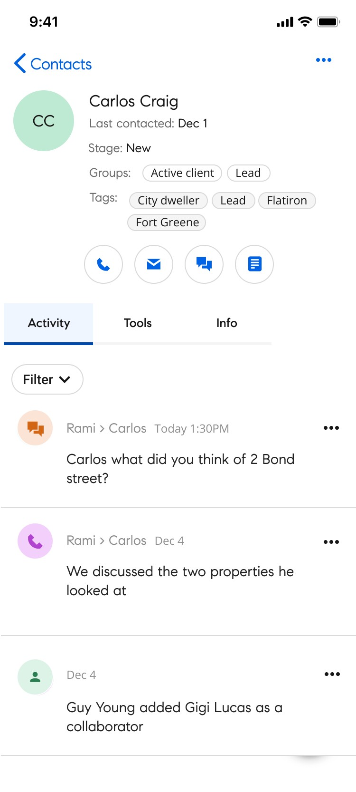
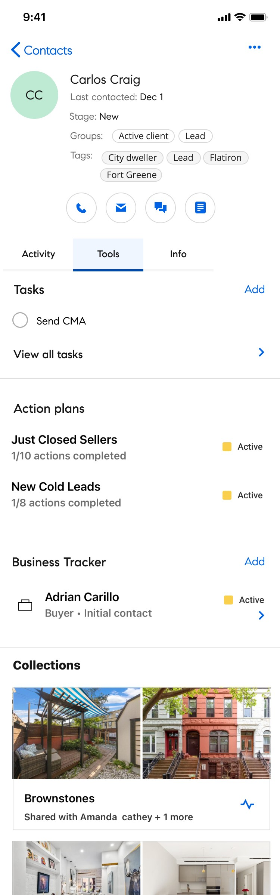
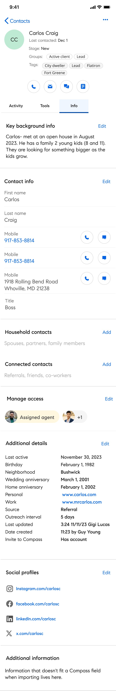
Activity, Tools, and Info: the same structure as desktop, sized for a between-showings check-in.
Outcomes: stronger engagement, measurable adoption
The redesigned CRM workflows drove a 20% year-over-year increase in CRM usage by May 2025. Stakeholder response was strong across all three interventions, with agents citing improved workflow visibility, faster prioritization, and greater continuity across client relationships.
Re-engaging with Carlos Craig: a flow
A real flow through the redesigned experience, re-engaging with a contact named Carlos Craig after some time away, picking back up his status, activity, and next steps from exactly where they left off.
Interactive, click through the prototype above.
What I'd take from this
Looking back, I would have prioritized tighter integration of the activity feed into the homepage experience to better connect the product's key moments. I'd also advocate for a more phased rollout with stronger training support. The volume of change was significant, and users would have benefited from more time to build familiarity before the next layer arrived.